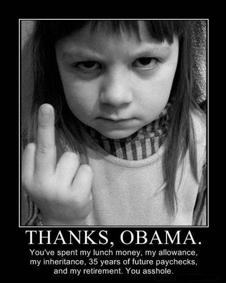
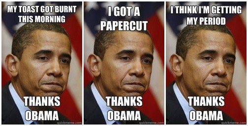

Red, White & Meme - How “Thanks, Obama” explains American politics
Barack Obama, slumped like a sullen teen, attempts to dunk a cookie in milk, only to realize with chagrin that the edges scrape haplessly against the cup’s rim. His snack game thwarted, the president mutters with a click of his teeth:
“Thanks, Obama.”
These few seconds of a Buzzfeed video, which has been viewed more than 55 million times since February, signaled the moment when the one of the most malleable, morally complex political memes of our time arrived at its logical conclusion. It was a meta, sarcastic take on a phrase whose very humor and power lies in sarcasm, uttered by the very man it seeks to either lambast or defend, depending on whom you voted for. The “Thanks, Obama” meme was first used six years ago, and has ricocheted from deep-red backchannels to liberal talk shows and back again: in an Instagram caption for a shattered beer bottle, in a Facebook post from an incensed conservative, in a nonsensical, racist Reddit post, in a tweet from a teenage boozehound bemoaning her underage status.
The phrase “Thanks, Obama” is so multilayered that it has endless potential for manipulation and co-opting, for ambiguity and plausible deniability. And yet the fact that we instantly grasp its meaning in context says more about American politics than all the ephemeral campaign memes put together. Our two-party system is so polarized, with each side’s loyalists so convinced of the other’s idiocy, that overstatement usually goes unchallenged, whether it’s on national television or a casual #thanksobama hashtag. Meanwhile, our media tableau is vast yet compartmentalized, a series of little echo chambers in which it’s safe to make political jokes you just know your Facebook friends will get.
The meme emerged during the bloody aftermath of the Great Recession. Obama had just won the Nobel Peace Prize even as his approval ratings reached a new low of 47 percent. The country was still reeling from high unemployment, unthinkable national debt, and a general reckoning with three decades of creeping economic austerity. Occupy Wall Street was still two years away — all we had was the wreckage of the Bush presidency, and a sector of the population all-too-eager to undermine our first black president by heaping Dubya’s failures onto him.
The first appearance of the two-word phrase can be traced back to May 2009, when Twitter user @vlucas employed it to make a fairly straightforward conservative complaint about national sales tax.
But the modern meaning of “Thanks, Obama” — a withering diss lobbed by conservatives toward the president — truly became a meme when we bestowed upon it the great honor of white letters. In December 2009, a Blogspot user named Authentic Connecticut Republican posted a picture of a kindergartner brandishing her middle finger, with the following caption:

But the right didn’t retain ownership over the meme for long. According to the Washington Post, one of the first recorded instances of the phrase used to mock the diehard conservatives wielding it earnestly was a YouTube video posted by amateur comedians in March 2011. The premise is pretty simple: A dude with a delightful hipster haircut is terrorized by his irrational, knife-wielding female friend. “Thanks, Obama,” the dude wails goofily at the video’s conclusion. Not exactly a feat of sidesplitting comedy, it nevertheless makes its point: Conservatives blame Obama for everything.

The phrase spread quickly after that. “Thanks Obama” inspired subreddits, a Twitter handle, and a Tumblr; most are still active today. You’d think the Buzzfeed video would have squashed the meme altogether, much like when your dorky dad starts trying out slang you use to make fun of him to your friends. But the phrase has lived on because conservatives continue to evoke it with a straight face. A Tennessee woman was arrested in July for counterfeiting money because, she says, she’d heard Obama had okayed it. Doughnut-licking Ariana Grande hates America, a former Miss Kansas theorized, because Obama. The end times are near, Michele Bachmann warns, and it’s Obama’s fault.
It’s not like “Thanks, Obama” is a new concept, exactly; the conservative columnist James Taranto has been mocking liberals with the phrase “We Blame George W. Bush” for years. Before Bush, Americans hated Herbert Hoover because of the Depression so fiercely that TIME magazine called him “President Reject” in a 1932 profile. A popular ditty at the time was basically the “Thanks, Obama” of its day:
Mellon pulled the whistle Hoover rang the bell
Wall Street gave the signal
And the country went to hell.
The blame game goes back even further. Americans excoriated Martin Van Buren, a.k.a. “Martin Van Ruin,” for the horrific Panic of 1837, which rivaled the Great Depression in unemployment rates (even though Andrew Jackson was the one who vetoed the re-charter of the Bank of the United States, which in turn caused a collapse in credit). And sitting presidents have been blamed for their successors’ mistakes pretty much since America was founded.
But there’s a pervasiveness, endurance and chameleon-like quality to “Thanks, Obama” that transcends the universal temptation to turn a figurehead into a scapegoat. Obama is our first social media president, coming up in an era where the thoughts and feelings of regular people have infinitely more reach. And opponents have sought to not just contest his policies but delegitimize his entire presidency since his inauguration. One quick Google of “Obama imposter-in-chief” digs up scads of conspiratorial sites explaining how the president was born in Kenya, how he stole votes, how he’s a Muslim polygamist. “Thanks, Obama” is at once dismissive and paranoid, a way to both discredit and demonize a black man in power who some believe never should have been there in the first place.
“Thanks, Obama” acknowledges that Obama is objectively one of the most productive and history-making presidents we’ve ever had, especially considering the river of shit he inherited when he took over. Whether it’s used sarcastically or not, the phrase is a reaction to something Obama has made happen, not something he has failed to do. “Thanks, Obama” renders the president almost godlike, since he’s somehow responsible for mundane nuisances like stubbed toes and cloudy days. Magically, he even has a hand in past calamities; one third of Louisiana Republicans blame Obama for Bush’s inept response to Hurricane Katrina. Put another way: This meme is not a dejected “Thanks for nothing.” It’s a hyperbolic “Thanks for everything.”
It’d almost be funny if it weren’t deeply depressing. If conservatives deem Obama godlike, it’s because he’s the devil incarnate. Obama is a moderate by historical standards, but to his detractors he’s always represented a clear and present danger, a cancer that threatens to profoundly alter the American way of life. He’s seen as a person who will inject change and disruption at every turn, who has his evil little hand in every U.S. tradition. We all know the president has far less power than this meme implies. But the omnipotence afforded the president with the classic use of “Thanks, Obama” nakedly exposes some Americans’ fear of change — even if that change comes more in the form of skin color than radical policy initiatives.
As we enter the IDGAF era of Obama’s presidency, yet another phase of “Thanks, Obama” has taken hold — and it’s the most transgressive of all. In recent months, Obama has shed his ill-advised cautiousness and produced a rash of progressive victories: his executive order granting protection for undocumented immigrants, a series of gifts to the gay rights movement, the salvation of Obamacare. Some liberal supporters, of the latter especially, have taken to using the meme literally. The Tumblr Thanks Obamacare turns the meme on its head and saps the sarcasm right out of it. Yael Reisman, a nonprofit worker from Brooklyn, tweets #thanksobama monthly when she picks up her birth control, copay-free under the Affordable Care Act.
“It occurs to me to do it when I have these moments of actual tangible benefits that are directly traced back to the administration,” she says. “I’m literally just thanking the president.” She always makes sure to @ the White House.